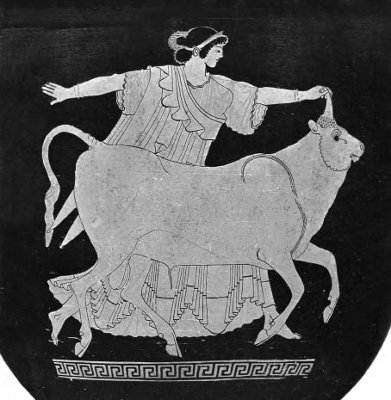

Olimpos Tanrılar Ülkesi'ndeki görkemli sarayında oturan tanrılar tanrısı Zeus, hem kendi buyruğundaki tanrıçalara, hem de yeryüzündeki ölümlü güzellere sık sık gönlünü kaptırırdı... Bir zamanlar Baştanrı olan babasının tahtına zorla kurulup bütün tanrıları ve de insanları buyruğu altına aldığından beri bu huyunu hep sürdürdü!. Ne var ki evrenin tartışmasız tek egemeni olmasına karşın, küçücük dünyamızda çevirdiği dolapları karısı tanrıça Hera'nın kıskanç gözlerinden kaçırabilmek için, örneğin kendini bazen bir boğaya, bazen bir kuşa dönüştürmek zorunda kalırdı...
Bir bahar sabahı gene öyle, Olimpos'taki sarayında erkenden uyanmıştı Zeus. Artık orada tekdüze sürüp giden perikızlarının danslarından, aralıksız içki alemlerinden, tanrıçaların anlamsız kavgalarından bıkıp usanmış gibiydi. Üstelik bir aşk serüveninden kaynaklanan kıskançlık yüzünden, o gece karısı Hera'yla geç vakitlere dek tartışmışlardı... O yüzden içini açacak bir eğlence arıyor gibiydi kendine. Dünyada her zaman gönül eğlendirici, beklenmedik avuntuların bulunduğunu da deneyimleriyle çok iyi bildiğinden, sarayının penceresinden yeryüzünü dikizlemeye başladı... Bir ara bakışları Suriye üzerinde odaklandı. Orada, denize yakın evinde, güzeller güzeli, Asya kıtasının en ünlü kızı Evropa (Europa) daha yeni uyanmış, bahçedeki çiçeklerini suluyordu. Bu güzel kızı gözüne kestiren Zeus o gece onun düşüne girdi. Ertesi sabah da Evropa gördüğü bu düşü kendi kendine yorumlamaya çalışıyordu. Düşünde, şimdiki adı Avrupa olan kıta onu alıp kendi ülkesine götürmek istiyordu. Bu alıp götürme olayının gerçekleşebilmesi için de, Baştanrı Zeus kendisine yardımcı olacağını söylüyordu. Bunun üzerine Asya kıtası da; "Hayır, biz güzel kızımız Evropa'yı başka yerlere vermeyiz; o bizim öz kızımızdır!" diye diretiyordu. Uyku sersemliği içindeki güzel Evropa, bir süre bu düşü yorumlamaya çalıştıysa da kuşkularını yatıştıracak bir yoruma ulaşamadı. "Aman, hayırlısı neyse o olsun!" anlamında elini silkeledi. Üstelik bu düş üzerinde uzun boylu kafa yoracak denli zamanı da yoktu. Çünkü o gün için diğer kız arkadaşlarına söz vermişti; kırlara çiçek toplamaya gideceklerdi... Evropa, emekçilerin tanrısı ve Afrodit'in kocası topal Hefaystos'un incecik tunç tellerden ördüğü o güzel sarı sepetini kaptığı gibi doğruca, deniz kıyısındaki rengârenk çiçeklerle bezenmiş tarlalara doğru yollandı hoplaya zıplaya... Orada buluştuğu güzel kız arkadaşları arasında gerçekten de en parlak sabah yıldızı gibiydi!.. Sepetini, sanki sırf onun için açmış gibi görünen en güzel çiçeklerle donatmaya başladı hemen...
Olimpos'taki sarayının penceresinden faltaşı gibi açılmış gözleriyle Evropa'yı izleyip duran Baştanrı Zeus; aklından geçen şeytani düşünceler yüzünden kendi kendine gülümsedi... Sonra da penceresinden yıldızlarla dolu o büyük boşluğa bırakıverdi kendini.. Yıldızları savura savura alçaldı; Evropa'nın çiçek topladığı tarlaya yakın bir yere, sessizce kondu. Hem karısı Hera'ya görünmekten korktuğu, hem de olağan haliyle kadınların kızların kendisine yüz vermediğini bildiğinden, kendisini alımlı ve bıçkın bir beyaz boğaya dönüştürüverdi hemen. Sonra da Evropa ve arkadaşlarının oynayıp eğlendikleri tarlaya girdi usul usul; utanıyormuşçasına çekine çekine... Kızlara yaklaşınca da, çiçeklerin arasına yüzü koyun yatıverdi... Onu ilk gören de Evropa oldu ve bu beyaz boğanın öyle yatıvermiş haline bakaraktan gülümsedi. Kendi kendine içinden ezgiye benzer bir şeyler mırıldandı:
Öyle tatlı, öyle güzel bir boğa ki bu,
Sırtına bindirip gezdirecek bizi...
Zaten bir insan gibi bakıyor,
Yok boğaya benzeyen bir yanı,
Ne var ki hiç konuşmuyor...
Gülümsemesini sürdüren Evropa, çocuksu bir sevecenlikle boğaya yaklaştı; başına, boynuzlarına şöyle bir dokundu ilkin... Ama boğa da öylece hiç kımıldamadan durup kendini uzun uzun sevdirip okşattı... Bunun ardından Evropa boğanın sırtına oturup kendisini izleyen arkadaşlarına, "gelin" işareti yaptı eliyle. Ama Zeus da aynı anda ayağa fırladı ve sırtındaki Evropa'yı fırtına gibi uçuraraktan, az ötedeki denize doğru yollandı! Elindeki aygıtla fırlattığı yıldırımlar yüzünden kılıçla bölünmüşçesine aniden yarılan deniz, dümdüz bir yol açtı boğaya. Neye uğradığına bir anlam veremeyen Evropa; haliyle düşmemek için, bir eliyle boğanın boynuzuna tutunmaya çalışırken, öteki eliyle de, ıslanmaması için mor eteklerini toplamaya çalışıyordu! Nereus Kızları denen denizperileri boğaya kılavuzluk ederken, denizler tanrısı Poseydon da en önde gidiyordu. Poseydon'un yanında da, durmadan elindeki boruyu öttüren Triton vardı. Gördüğü bu garip yaratıklardan büyük bir ürküntüye kapılan Evropa, bu boğanın bir tanrı olabileceğini düşünmeye başladı... Korkuyla boğanın kulağına eğildi ve bu yolsuz yolaksız denizlerin ortasında, kendisini bırakıp kaçmaması için yalvardı. Boğa da ona, kendisi hakkında bir tanrılık varsayımında bulunmuş olmakta yanılmadığını söyledikten sonra; "Ben tanrılar tanrısı Zeus'um!" dedi. "Dün sabah Olimpos'taki sarayımdan seni izledim; sana deli divane vuruldum. Korkma benden..." deyip denizdeki hızını daha da artırdı!.. Kızcağız biraz korkularından sıyrılır gibi oldu. Sonra denizde durmadan yol alan beyaz boğa, sırtında oturan Evropa'ya doğru çevirdi başını yeniden, "Seni Girit adasına götürüyorum. Orada sarayımız, çocuklarımız olacak..." dedi.

Evropa ve boğaya dönüşmüş Baştanrı Zeus
Baştanrı Zeus'un dediği oldu. Asya'dan koparıp getirdiği güzel Evropa; bir taraftan yeni geldiği kıtaya kendi adını verirken, öte yandan da nurtopu gibi üç oğlan çocuğu getirdi dünyaya... Bu çocuklardan Minos ile Radamantis; yeryüzündeki yaşamları süresince, dünya ve insanlar karşısında hep adaletten, barış ve hoşgörüden kaynaklanan davranışlar sergilediler.
Bu yüzden de ölümlerinden sonra, tanrı Hades'in Yeraltı Ülkesi'nde başyargıçlığa getirildiler...